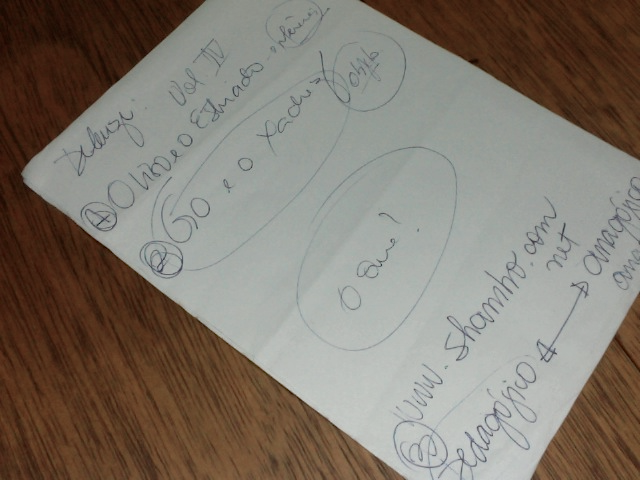

Teoria
1. Introdução
Uma dúvida que quase todo mundo passa no último ano da Universidade, é se perguntar o que fazer de projeto de conclusão de curso. Quatro anos no curso de Design da Universidade Estadual Paulista (Unesp) que parecem passar correndo por nossas vidas, mas que ao mesmo tempo ocupam um grande espaço, com muito aprendizado e muita troca de conhecimento. A vasta área de Design torna ainda mais difícil a nossa escolha para o projeto de conclusão. Saber por quais caminhos percorrer, o que escolher e por onde começar, tudo é um grande mistério. Aulas e aulas que nos deixam por horas pensantes sobre o que foi dito, outras curiosos por novas descobertas. Uma das aulas de grande importância na grade do curso foi a de linguagens contemporâneas, aulas dinâmicas que geravam discussões e tudo que ali era argumentado ficava na mente sendo questionada. Será que tudo o que aprendemos e sempre acreditamos estava errado? Será o mundo uma mera representação? Muitos tópicos foram levantados e mais tarde passamos a pensar o que seria nosso projeto final. Ali no terceiro ano tudo ainda era confuso, e uma frase me instigara por longo tempo: “Não importa o que, mas sim o como.” dizia meu professor e atual orientador Dorival Campos Rossi.
Analisei projetos de conclusão de amigos e colegas orientandos do mesmo professor, e comecei a ter uma vaga idéia do “como”. Rafael Arrivabene, grande colega e designer de talentos imensuráveis, escreveu como projeto de conclusão o livro Design Projeto Mutante, que recomendo a todos os designers, fazendo um questionamento incrível sobre design, ética, e sobre tudo a vida. Como as coisas se relacionam? De que maneira podemos mudar as pessoas? Como pensar em design? Um projeto fruto das constantes conversas entre aulas e junto aos amigos, e principalmente da vivência obtida durante a graduação. Outro projeto que insisto em citar, é o Shambo. Projeto de Victor Sanches que mostra diferentes olhares para o design. Aborda um leque de possibilidades e relações, fazendo do design uma ciência, um design de relações. Esse projeto também é muito intrigante ao retratar a maleabilidade do design, as diferentes visões e compreensões do autor.
Em minhas aspirações busquei nas áreas de maior interesse um início. Juntar Design, Semiótica e Física, não parecia ser uma tarefa muito fácil. O que fazer para juntar tudo isso? Cheguei a pensar em jogos ou aplicativos móveis que fossem educativos. Mas ainda não era bem o que eu realmente queria. Ainda estaria pensando no “o que”, e não no “como”. Conversando com o orientador pudemos definir um caminho mais claro, ordenar melhor as idéias para juntar tudo aquilo que queria. Estudar o livro Mil Platôs de Gilles Deleuze e Félix Guattari passou a ser meu ponto de partida, comecei a pesquisar referências no campo da filosofia e do design, retratando as sociedades e suas relações. Livros, filmes, sites, conversas e discussões ajudaram no surgimento dessa proposta. Transitaremos por diversos assuntos e traremos no “como” o design sensível.